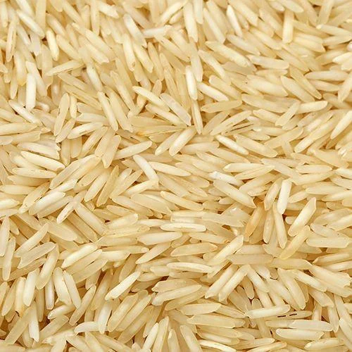
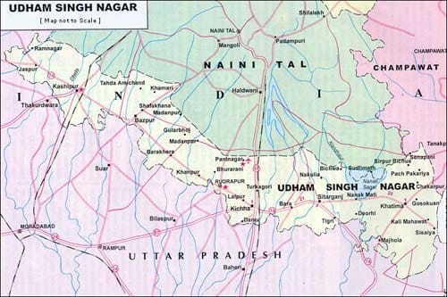

Basmati Rice from Udham Singh Nagar is renowned for its long grains, rich aroma, and fluffy texture when cooked. This rice variety is highly regarded both in India and internationally for its taste and high quality. Grown in the fertile Terai region, the basmati rice of this district thrives in nutrient-rich alluvial soil and under optimal climatic conditions. The grains are slender and elongate after cooking, making them ideal for biryanis and festive dishes. Packed with essential nutrients, it is low in fat, cholesterol-free, and easy to digest. Farmers here follow both traditional and modern organic practices to ensure the rice remains natural and chemical-free.
Basmati rice cultivation in Udham Singh Nagar has a legacy that goes back generations. The area’s proximity to Himalayan rivers and abundance of water resources have made it a prime zone for paddy cultivation. The unique soil composition and climate contribute to the exceptional fragrance and taste of the rice. Over time, this region has become a major hub for Basmati production and export. In local culture, Basmati rice is served during weddings, religious ceremonies, and major feasts. It is also a symbol of hospitality and abundance in many Kumaoni and Garhwali traditions.
For direct purchase or wholesale inquiries, reach out to Udham Basmati Farmers Association at 011-46710423 or email at customercare@tradeindia.com. Visit https://www.tradeindia.com/products/basmati-rice-c6050213.html for more product listings. You can also find high-quality Basmati rice in Rudrapur's local mandi and nearby farmers' markets.

- "Basmati" means "fragrant" in Hindi — a true testimony to its aromatic nature.
- The district's rice is exported to Gulf countries, Europe, and the US.
- Basmati rice from this region is aged for up to 2 years for enhanced flavor.
- Farmers have adopted water-efficient methods like SRI (System of Rice Intensification) to make rice cultivation sustainable.
- The region contributes significantly to Uttarakhand’s agricultural GDP due to its rice production.